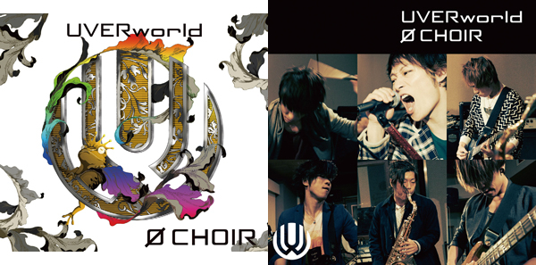

0 CHOIR
デビュー10周年に突入し６人となって初となる、UVERworld８枚目のアルバム。
また彼らが革命を起こす。

収録曲
| 1. 零HERE〜SE〜 |
|---|
| 2. IMPACT |
| 3. 誰が言った |
| 4. ナノ・セカンド |
| 5. Fight For Liberty |
| 6. ENOUGH-1 |
| 7. KICKが自由 |
| 8. a LOVELY TONE |
| 9. 7日目の決意 |
| 10. 別世界 |
| 11. Born Slippy |
| 12. Wizard CLUB |
| 13. 在るべき形 |
| 14. 0 choir |
初回生産限定盤 特典DVD
2013年12月日本武道館で行われた女祭り、男祭りなどのライブ映像約50分を含む、
約100分にわたる、6人になったUVERworldのドキュメンタリー映像core ability 3を収録！